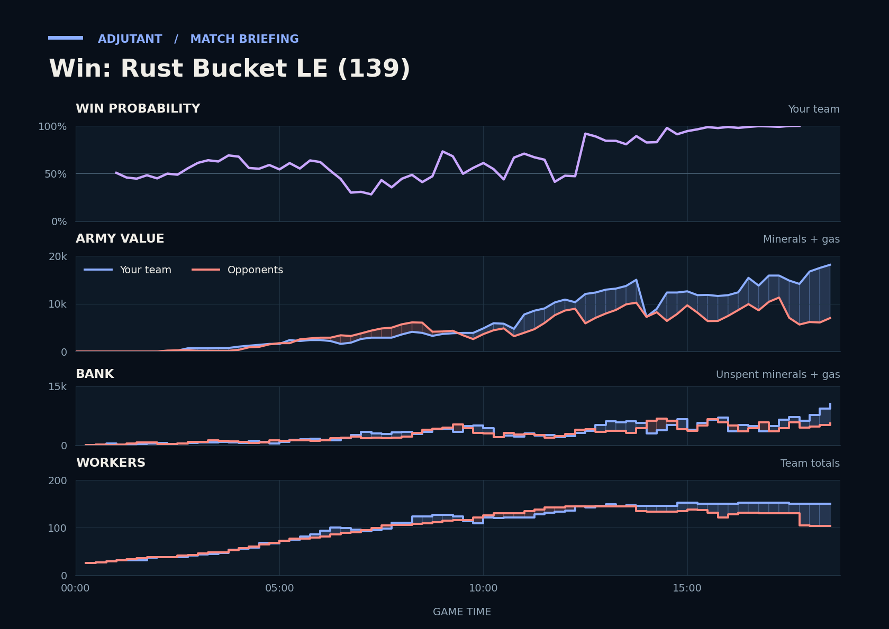

Win: Rust Bucket LE (139)
Provisional debrief. The full report (timeline, insights and analysis) is being generated.

Cached narration uses different analysis inputs (facts, engine notes, prompts or model settings). It has not been regenerated for this report.
**Win.** You won because, after trading armies at their bases, you rebuilt a bigger army and finished with over three times the opponents' army.
**Why**
- 12:05–12:28: Scallop's Vikings killed Marines inside Medivacs, and the opponents lost 3,900 army.
- 13:37–14:22: Both armies traded heavily at CritterKill's third, but CritterKill's whole army died, and you led in army from 14:20 on.
- 18:20–18:43: TakeTheTip's Ultralisks killed most of CritterKill's army, worth about 2,100, and the gg followed.
Current engine analysis: Win. Review 12:05–12:28: you won a fight (3,900 killed, 800 lost). The biggest fight came at 17:15–18:43 (6,200 lost, 15,075 killed).